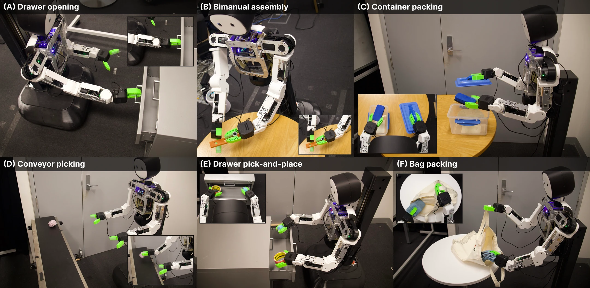
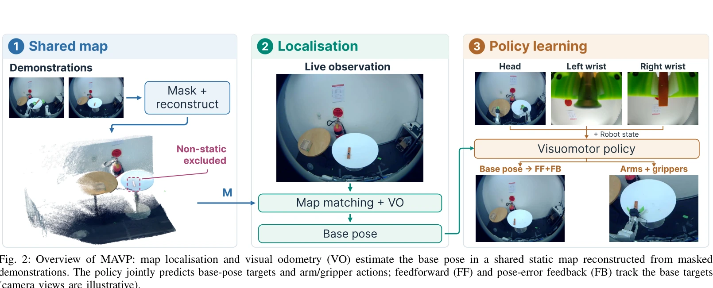

01
Drawer Packing
Pick up the eraser, open the drawer, place the eraser and two toys inside, and close it.
Robot learning Mobile manipulation
1School of Computer Science and 2Australian Center for Robotics, The University of Sydney, Australia
3College of Connected Computing, Vanderbilt University, TN, USA
†Equal contribution · *Corresponding author: Weiming.Zhi@sydney.edu.au
MAVP learns explicit base-pose targets in a shared map frame and tracks them with localisation feedback, helping a mobile robot reach the right place for manipulation.

Overview
Demonstrations can disagree about where the base should go when their motion is expressed only as local velocity. MAVP reconstructs a static map from demonstrations, uses that map to align base poses, and predicts pose targets alongside arm and gripper actions.
Method
Figure 2 artwork from the paper source: shared map construction, localisation, and policy learning.

Experiment videos
Each clip shows a task rollout. Footage is accelerated for viewing; people visible in the original recordings have been masked or removed from these edits. All six clips use an original instrumental MAVP soundtrack.
Pick up the eraser, open the drawer, place the eraser and two toys inside, and close it.
Remove the peg, travel to the box, and place all parts inside.
Approach and open the box, place an object inside, and close the lid.
Track and grasp an object moving on the conveyor.
Return two objects to their corresponding drawers.
Take a bag from the rack, pack the table objects, and hang the bag back.
Experimental results
All results below are drawn from the paper. Each policy was evaluated over 50 physical rollouts per task; success requires completing every task step.
Table V · Main comparison
V uses unanchored velocity without a pose input. P predicts map-frame pose targets with pose input and localisation feedback.
Choose a policy family to compare the same six tasks.
| Task | ACT | Diffusion policy | Flow matching | |||
|---|---|---|---|---|---|---|
| V | P | V | P | V | P | |
| Disassemble and Deliver | 38% | 90% | 42% | 86% | 32% | 88% |
| Drawer Packing | 20% | 64% | 44% | 62% | 38% | 66% |
| Conveyor Picking | 42% | 66% | 38% | 74% | 36% | 76% |
| Lidded Box Packing | 44% | 88% | 52% | 56% | 50% | 60% |
| Bag Packing | 18% | 66% | 28% | 68% | 32% | 70% |
| Dual-Drawer Return | 22% | 68% | 30% | 70% | 36% | 74% |
Source: paper Table V. Bold cells mark the highest success rate for each task.
Table II · Controlled variants
Success rates for ACT variants on two tasks, with the same evaluation protocol.
| Method / variant | Disassemble & Deliver | Lidded Box Packing |
|---|---|---|
| Unanchored velocity | 38% | 44% |
| Odometry pose | 16% | 16% |
| Map-frame pose without pose input | 74% | 58% |
| Velocity with pose input | 60% | 64% |
| Map-frame pose with pose input | 84% | 76% |
| Map-frame pose with pose input + augmentation | 90% | 88% |
Pose denotes the current map-frame base-pose input; augmentation adds pose noise during training.
Figure 9 · Feedback ablation
Conveyor Picking, 50 rollouts per variant with the same policy checkpoint.
Task success
Time-weighted tracking RMSE lower is better
FF: feedforward. FB: pose-error feedback. Yaw tracking changes little in this comparison.
Table VI · Ongoing localisation
Success when alignment is fixed after the first map localisation versus updated during deployment.
Source: paper Table VI. Ongoing-localisation results are reused from Table II.
Full paper
Available as arXiv:2609.26378. The tables above show the main comparisons. The PDF contains the full setup, evaluation protocol, ablations, and discussion.
Open the arXiv PDF